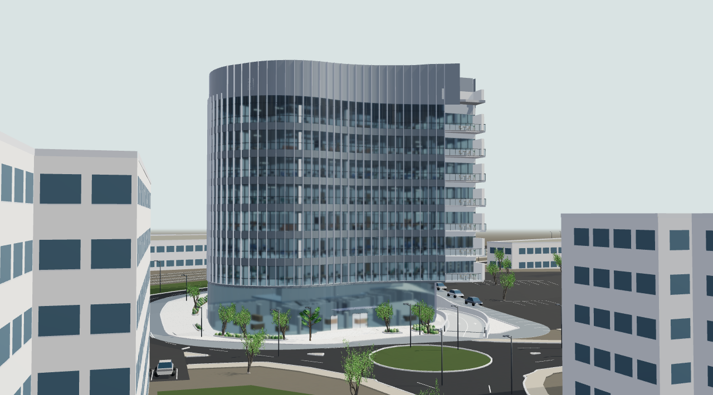
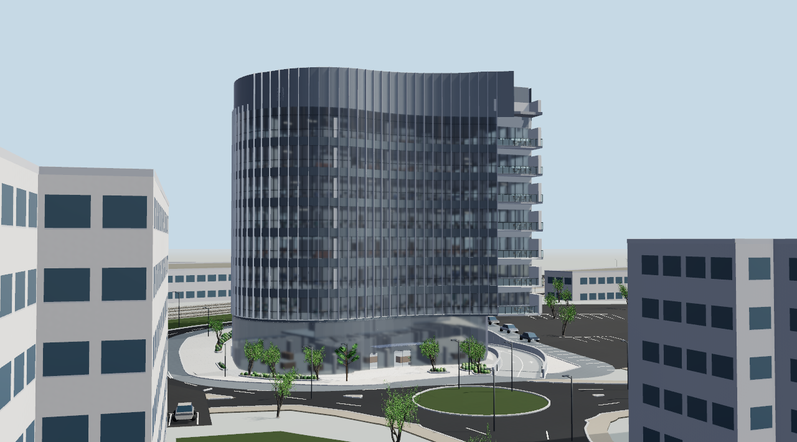
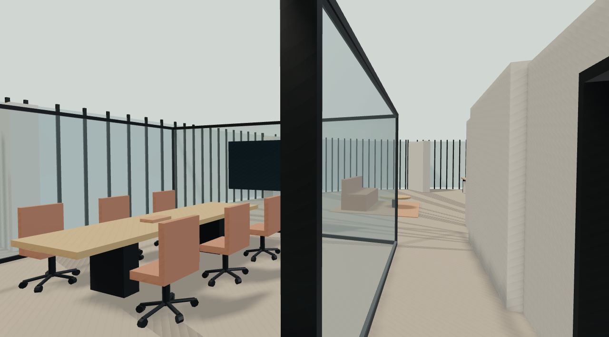
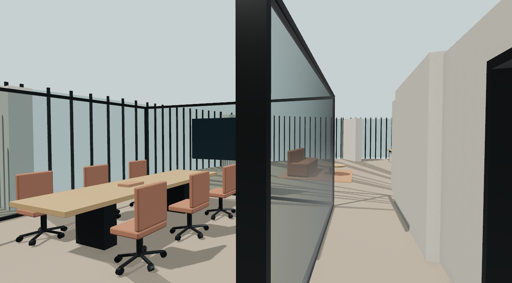
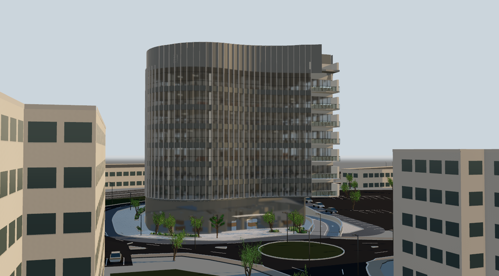

מה השתנה בתוך המודל
אור יום ואחר הצהריים
איזון בין השמש לאור הסביבה, עם אפשרות לעבור לאור אחר הצהריים חם.
מרקמים וזכוכית
מרקם עדין לאבן, בטון, עץ ובדים; זכוכית שקופה עם השתקפות הסביבה. קצוות מעוגלים ל־1,213 חלקי ריהוט בשבע קומות, במידות ובמיקום המקוריים.
צל ועומק
צללים מדויקים יותר ליד קירות ורהיטים עוזרים לקרוא את החללים ואת נקודות המפגש עם הרצפה.
סרגל קומפקטי ומבט נקי
יותר מקום לבניין, כפתור להסתיר את התפריטים ואפשרות לשמור תמונה של המבט שבחרתם.
השוואה חזותית מול גרסה קודמת


אותה מצלמה ואותו גודל תמונה. מבנה הבניין נשמר; החומרים, האור והריהוט שופרו.


אותה מצלמה ואותו גודל תמונה. מבנה הבניין נשמר; החומרים, האור והריהוט שופרו.
אחר הצהריים

אפשר להחליף את התאורה גם בזמן סיבוב הבניין. התאורה היא בחירה חזותית ואינה חישוב שמש באתר.
הבהרות וגבולות המודל
הבניין והסביבה נשענים על המקורות הקיימים. ריהוט, גמרים ותאורה מוצעים להמחשה. מבני השכנים והטופוגרפיה אינם מודל מדידה.
בדיקת המודל האינטראקטיבי
לבחינת השינויים בזמן אמת: פתחו את הצופה, בחרו בסרגל הכלים באפשרות תאורה ואיכות להתאמת האווירה, או לחצו על מבט נקי לצפייה במסך מלא ללא עומס ממשקי.